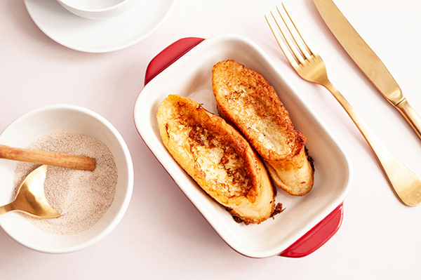

Torrejas Cubanas
This famous Cuban dessert is a blend of a variation of traditional French toast and a traditional Spanish sweet treat. Several different recipes exist for Cuban torrejas, as well as other recipes from Honduras, Venezuela, El Salvador, and other countries. However, they are not all the same, although they are all delicious in their own way.
Ingredients:
Traditional recipe ingredients.
For TOAST
- 1 lb of Cuban bread (sweet bread, sobao or French baguette)
- 1 cup of whole milk
- 1 tablespoon of vanilla extract
- 2 eggs yolks
- 4 eggs
- 1 teaspoon cinnamon, for sprinkling
- 4 tablespoons of butter or use 3 tablespoon of oil for frying and spread the butter over the toast at the end.
Traditional Recipe Variation Ingredients
- 4 oz of cream cheese, softened. In this case you should use only 1/2 cup of whole milk
- 1/2 cup of heavy cream
- 1/2 cup of guava jam
For SYRUP
- 1 cup granulated sugar
- 1 cup of water
- 1/2 medium lemon peel
- 1 cinnamon stick
- Honey
- Star anise
Instructions:
Preparation.
- Prepare a shallow bowl for beaten eggs
- A tray where you can place your toasts and another bowl where mix ingredients for syrup.
- Slice a loaf of bread. Each slice with a half inch thick
- Get your bigger saucepan or prepare your oven to a medium low temperature for at least 10 minutes. However, if this is your first time cooking this treat, we recommends you to use the saucepan.
Steps
Making the syrup
- Place into a pot over medium low fire temperature, the cup of sugar and water, the lemon peel and cinnamon stick and simmer for about 20 minutes, stirring occasionally until get the syrup-like thick consistency.
- After the first 10 minutes of cooking, add the honey, no more of two tablespoon.
- When the syrup is ready, add the star anise and let it cool. Then, after the first 15 minutes cooling just remove the peels, the cinnamon stick and the anise.
If you prefer to serve it cold, refrigerate the syrup for at least an hour, but if you want to serve this homemade delicacy warm or at room temperature, simply let the syrup cool for 30 minutes.